Wizard
Quick Send
IBI
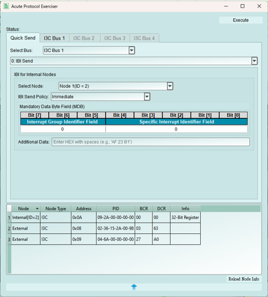
IBI (In-Band Interrupt) in MIPI I3C is a mechanism that lets a target device interrupt or notify the controller (master) using the same SDA/SCL lines as normal I3C data transfers—no extra interrupt pin is needed.
Hot Join
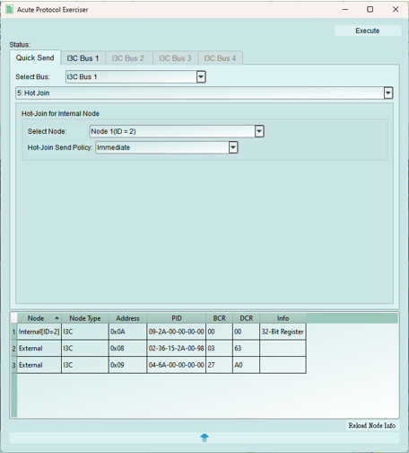
Hot-Join is a feature of MIPI I3C that allows a target device to be added to an active I3C bus after the system is already powered and running, without resetting or disturbing existing devices.
Private RW
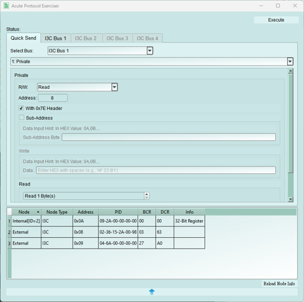
In MIPI I3C, Private Read and Private Write are the basic point-to-point data transfer operations between the controller and a single target device using that target’s dynamic address. They are called private because only one specific target participates in the transfer, unlike broadcast or group operations.
Broadcast CCC
-
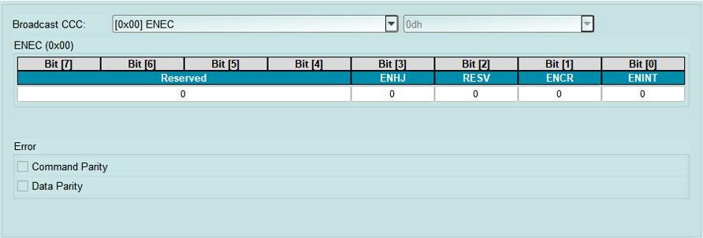
Broadcast CCC, ENEC allows the controller to enable specific event types simultaneously on all I3C target devices on the bus. The ENEC Broadcast CCC tells all targets which events they are allowed to generate, such as:- In-Band Interrupts (IBI)
- Hot-Join
- Controller Role Request (CRR)
Without ENEC, targets are not allowed to issue these events.
-
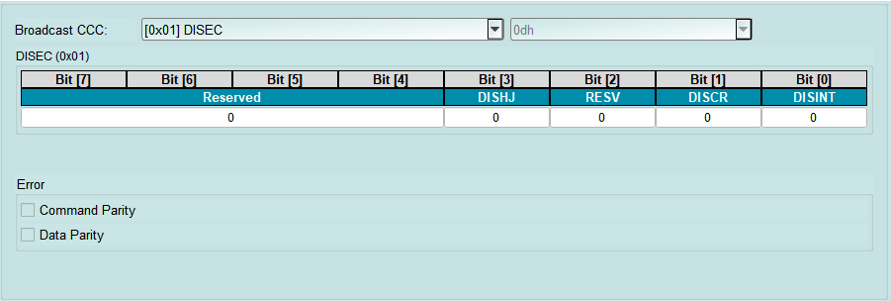
Broadcast CCC, DISEC allows the controller to disable specific event types on all I3C target devices on the bus. The Broadcast DISEC CCC tells all targets to stop generating certain in-band events, including:- In-Band Interrupts (IBI)
- Hot-Join
- Controller Role Request (CRR)
After DISEC, targets must not attempt to issue the disabled events.
-
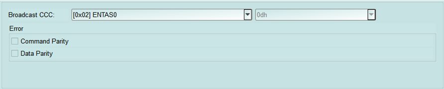
Broadcast CCC, ENTAS0 instructs all I3C target devices on the bus to enter Activity State 0, which is a defined low-activity / low-power state. The Broadcast ENTAS0 CCC tells all targets to:- Transition into Activity State 0
- Reduce internal activity and power consumption
- Maintain bus awareness so they can resume normal operation later
Activity State 0 is typically the lowest-power activity state defined for I3C targets.
-
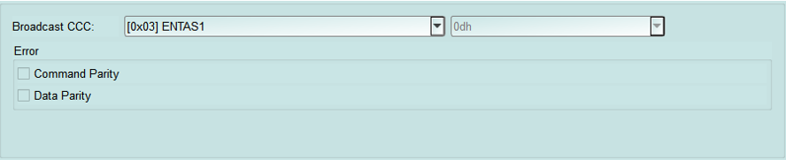
Broadcast CCC, ENTAS1 instructs all I3C target devices on the bus to transition into Activity State 1, a moderate-activity / reduced-power operating state. The Broadcast ENTAS1 CCC tells all targets to:- Enter Activity State 1
- Reduce power compared to full active mode
- Remain responsive to normal I3C bus operations
Activity State 1 balances power savings with bus availability.
-
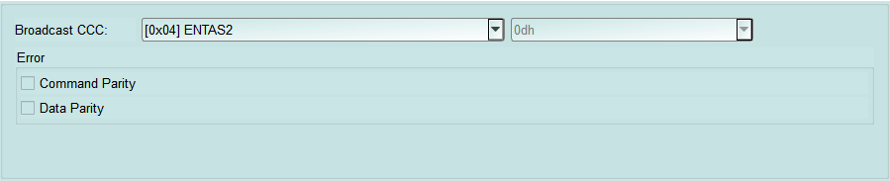
Broadcast CCC, ENTAS2 instructs all I3C target devices on the bus to transition into Activity State 2, which is a high-activity / near-full-performance state. The Broadcast ENTAS2 CCC tells all targets to:- Enter Activity State 2
- Operate with higher internal activity than state 1
- Be ready for high-throughput or low-latency communication
Activity State 2 is typically just below the fully unrestricted active state.
-
Broadcast CCC - ENTAS3 Broadcast CCC, ENTAS3 instructs all I3C target devices on the bus to transition into Activity State 3, which represents the highest activity and performance state defined by the I3C specification. The Broadcast ENTAS3 CCC tells all targets to:
- Enter Activity State 3
- Operate at full internal performance
- Be fully ready for maximum bus speed and lowest latency
Activity State 3 corresponds to unrestricted, fully active operation.
-
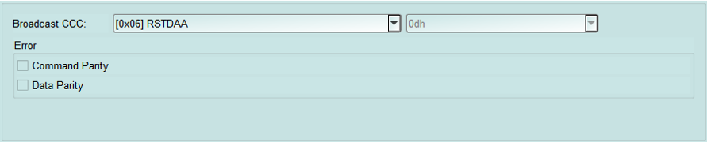
Broadcast CCC, RSTDAA instructs all I3C target devices on the bus to clear their currently assigned dynamic addresses and return to an unaddressed state. The Broadcast RSTDAA CCC tells all targets to:- Forget their dynamic address
- Return to the default, unaddressed condition
- Prepare for a fresh Dynamic Address Assignment (DAA) process
After RSTDAA, no target is addressable by private transfers until DAA is performed again.
-
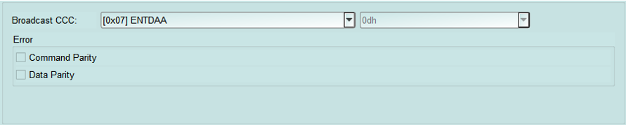
Broadcast CCC, ENTDAA tells all unaddressed I3C target devices on the bus to participate in the Dynamic Address Assignment (DAA) process, so the controller can assign each device a unique dynamic address. The Broadcast ENTDAA CCC allows the controller to:- Start the Dynamic Address Assignment (DAA) sequence
- Assign unique dynamic addresses to all unaddressed targets
- Ensure no conflicts between devices on the bus
Targets that already have a dynamic address ignore ENTDAA.
-
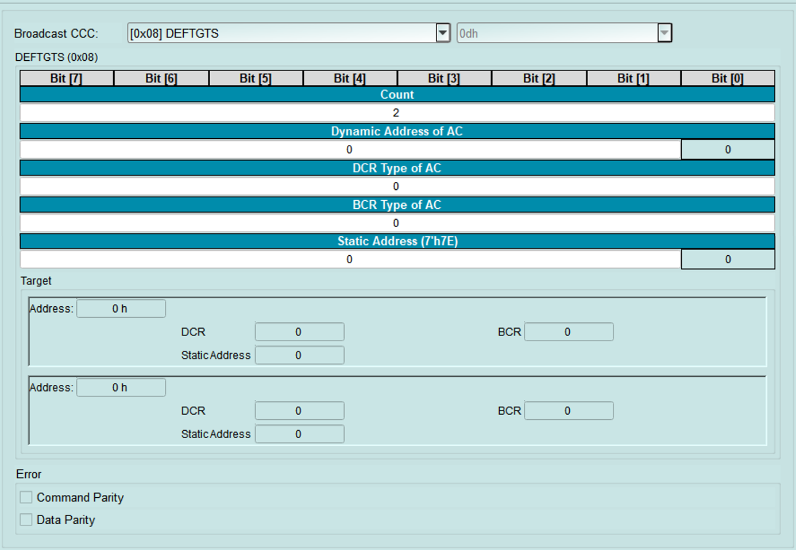
Broadcast CCC, DEFTGTS allows the controller to define timing parameters or slot assignments for all targets on the bus, particularly in grouped or time-slotted operations. The Broadcast DEFTGTS CCC allows the controller to:- Assign timing slots to target devices for coordinated operations
- Control grouped transfer schedules, e.g., for multiple sensors
- Ensure deterministic data reporting in systems with many devices
DEFTGTS is particularly important for high-speed or synchronized operations, where multiple targets may need to transmit data in a pre-defined order.
-
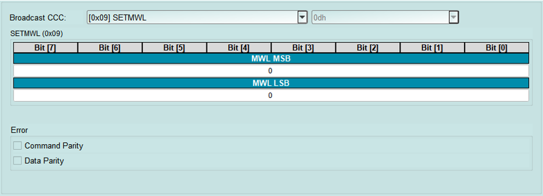
Broadcast CCC, SETMWL instructs all target devices on the bus to adopt a minimum number of bytes for write transactions before they will respond with an acknowledgment. The Broadcast SETMWL CCC allows the controller to:- Specify a minimum number of bytes that a target must receive in a write transfer before it can process or respond
- Prevent targets from being triggered by partial or incomplete writes
- Improve data integrity and bus efficiency
Essentially, SETMWL sets a threshold for write transaction length.
-
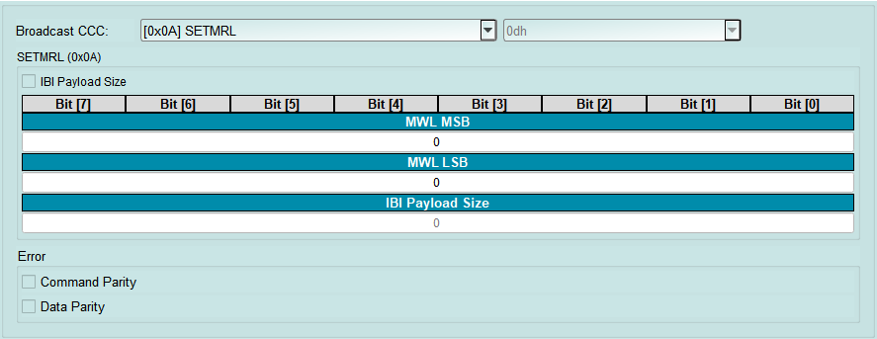
Broadcast CCC, SETMRL allows the controller to define the maximum number of data bytes that target devices are allowed to return in a single read transaction. The Broadcast SETMRL CCC tells all targets to:- Limit the length of private read transfers
- Never return more than the specified number of bytes per read
- Ensure predictable and controlled read behavior
This protects the controller from unexpectedly long read responses.
-
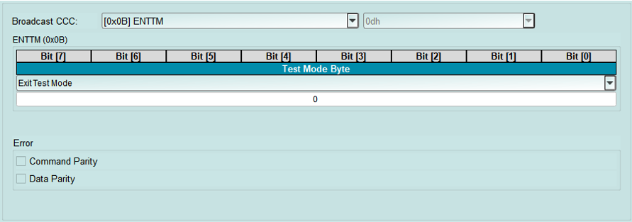
Broadcast CCC, ENTTM Broadcast CCC tells all targets to enter a special test or compliance mode, which is used for:- Manufacturing and production testing
- Electrical and signal integrity validation
- Protocol compliance and stress testing
Only targets that support Test Mode respond to ENTTM; other devices safely ignore the command.
-
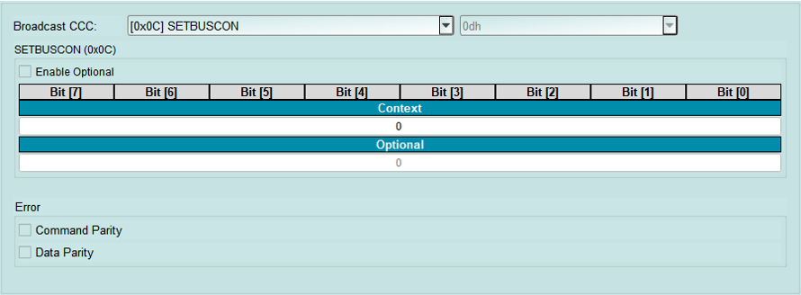
Broadcast CCC, SETBUSCON allows the controller to configure bus-level operating conditions simultaneously for all I3C target devices on the bus. The SETBUSCON Broadcast CCC tells all targets how the bus will operate, including parameters such as:- Bus speed and timing constraints
- Clocking and mode-related behavior
- Other global bus configuration settings defined by the controller
By issuing SETBUSCON as a broadcast, the controller ensures that all targets use a consistent view of the bus configuration, avoiding mismatches between devices.
-
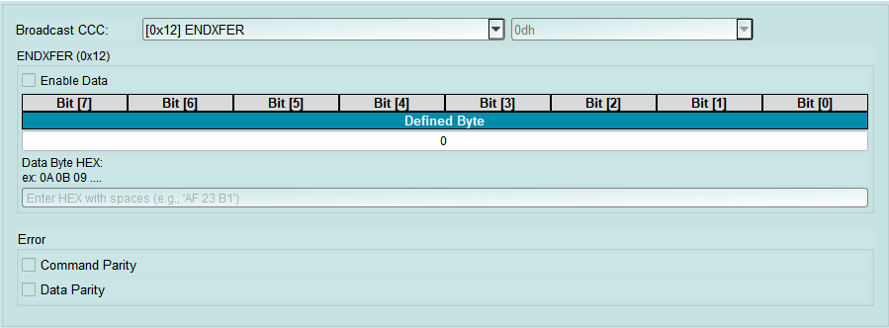
Broadcast CCC, ENDXFER allows the controller to simultaneously terminate an ongoing data transfer or special bus operation for all I3C target devices on the bus. The ENDXFER Broadcast CCC tells all targets that the current transfer context has ended, and that they must:- Stop participating in the current data phase or extended transfer
- Return to an idle or command-ready state
- Clear any temporary transfer-related state
ENDXFER is used to cleanly close or abort a bus operation that may involve multiple targets, ensuring all devices are synchronized and no target remains in a partial or undefined transfer state.
-
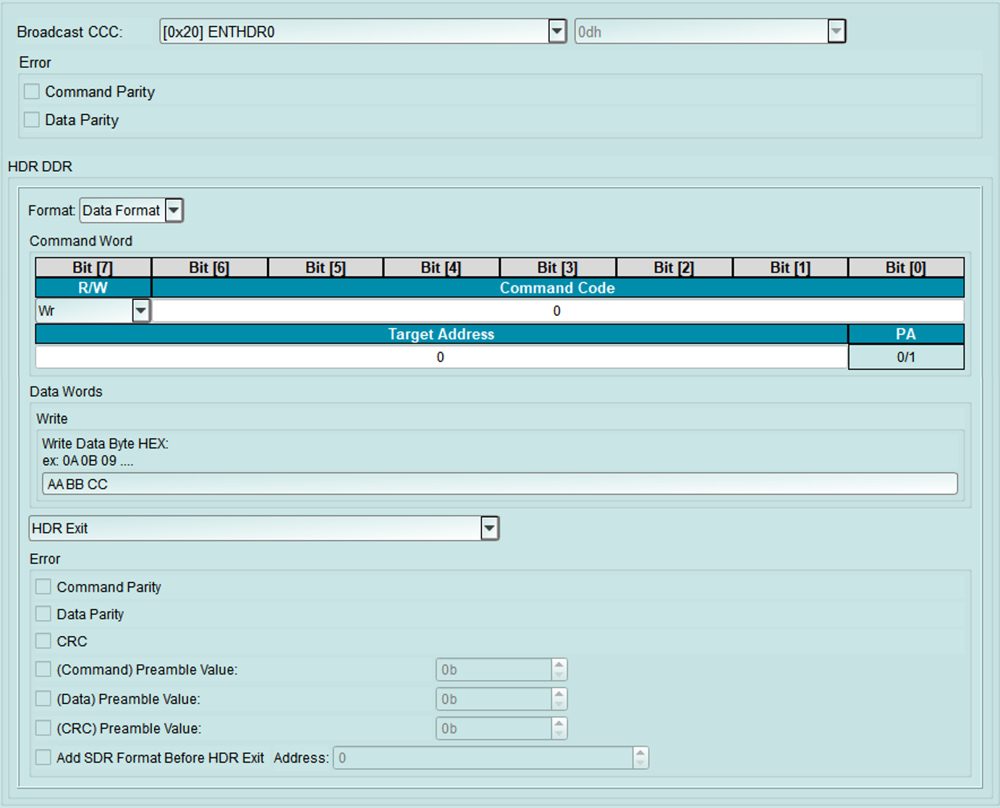
Broadcast CCC, ENTHDR0 allows the controller to simultaneously switch all I3C target devices on the bus into HDR-DDR (High Data Rate – Double Data Rate) mode. The ENTHDR0 Broadcast CCC tells all targets that support HDR-DDR to:- Exit Standard Data Rate (SDR) mode
- Enter HDR-DDR signaling
- Use double-data-rate transfers for higher throughput
Only targets that support HDR-DDR mode respond to ENTHDR0. Devices that do not support this HDR mode safely ignore the command and remain in SDR mode. In this command, user can decide to turn on the "HDR Repeat".1
-
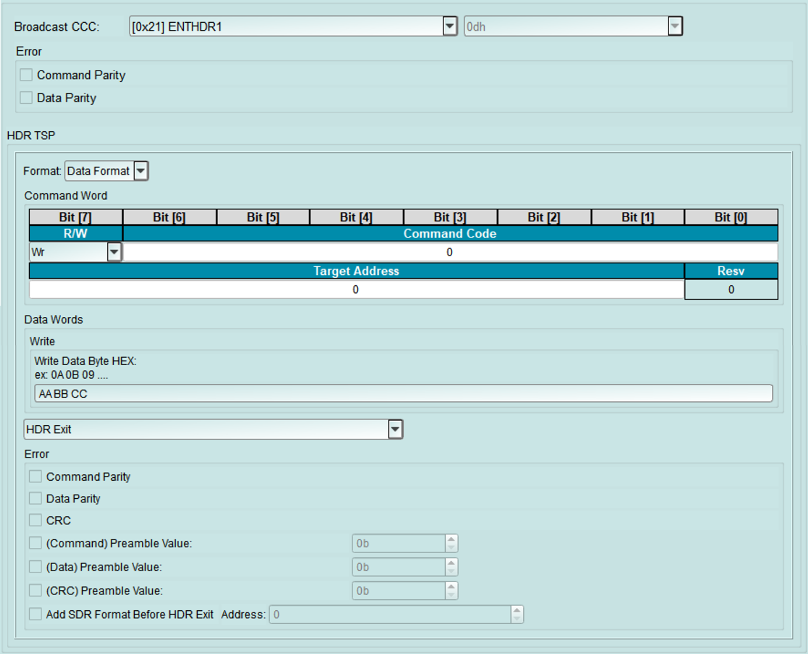
Broadcast CCC, ENTHDR1 allows the controller to simultaneously switch all I3C target devices on the bus into HDR-TSP (High Data Rate – Ternary Symbol Pattern) mode. The ENTHDR1 Broadcast CCC tells all targets that support HDR-TSP to:- Exit Standard Data Rate (SDR) mode
- Enter HDR-TSP signaling
- Use ternary symbol–based transfers to achieve higher data rates
Only targets that support HDR-TSP mode respond to ENTHDR1. Devices that do not support this HDR mode safely ignore the command and remain in SDR mode. In this command, user can decide to turn on the "HDR Repeat".1
-
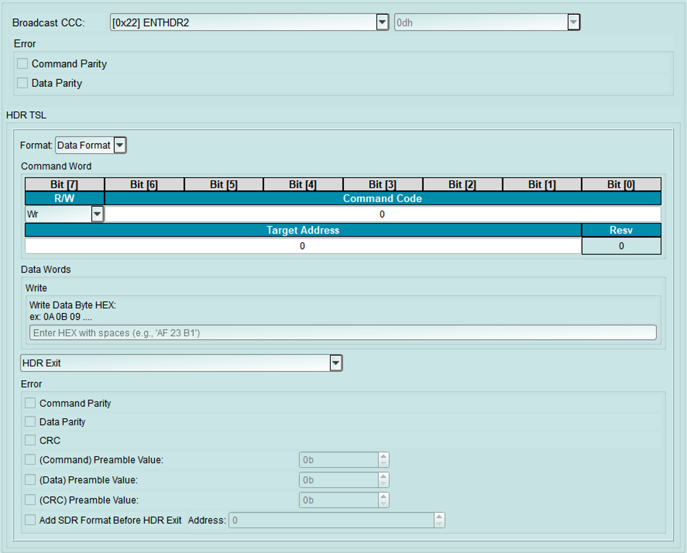
Broadcast CCC, ENTHDR2 allows the controller to simultaneously switch all I3C target devices on the bus into HDR-TSL (High Data Rate – Ternary Symbol Level) mode. The ENTHDR2 Broadcast CCC tells all targets that support HDR-TSL to:- Exit Standard Data Rate (SDR) mode
- Enter HDR-TSL signaling
- Use ternary symbol–level encoding for higher-throughput transfers
Only targets that support HDR-TSL mode respond to ENTHDR2; devices that do not support this HDR mode safely ignore the command and remain in SDR mode. In this command, user can decide to turn on the "HDR Repeat".1
-
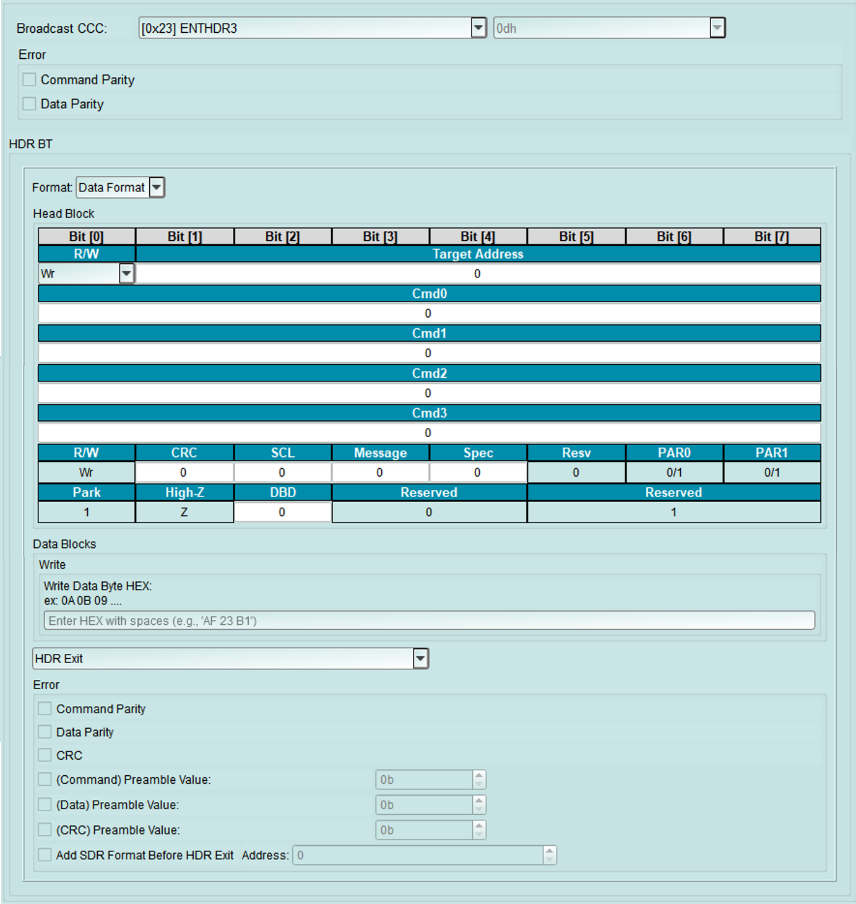
Broadcast CCC, ENTHDR3 allows the controller to simultaneously switch all I3C target devices on the bus into HDR-BT (High Data Rate – Burst Type) mode. The ENTHDR3 Broadcast CCC tells all targets that support HDR-BT to:- Exit Standard Data Rate (SDR) mode
- Enter HDR-BT signaling
- Use burst-mode transfers for high-speed data communication
Only targets that support HDR-BT mode respond to ENTHDR3; devices that do not support this HDR mode safely ignore the command and remain in SDR mode. In this command, user can decide to turn on the "HDR Repeat".1
-
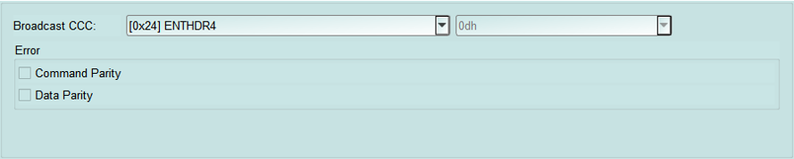
Broadcast CCC, ENTHDR4 allows the controller to simultaneously switch all I3C target devices on the bus into HDR-DY (High Data Rate – Dynamic) mode. The ENTHDR4 Broadcast CCC tells all targets that support HDR-DY to:- Exit Standard Data Rate (SDR) mode
- Enter HDR-DY signaling
- Use dynamic high-speed transfer modes that adapt to bus conditions for optimized throughput
Only targets that support HDR-DY mode respond to ENTHDR4; devices that do not support this HDR mode safely ignore the command and remain in SDR mode.
-
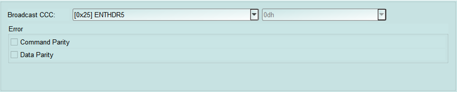
Broadcast CCC, ENTHDR5 allows the controller to simultaneously switch all I3C target devices on the bus into HDR-TSV (High Data Rate – Ternary Symbol Variable) mode. The ENTHDR5 Broadcast CCC tells all targets that support HDR-TSV to:- Exit Standard Data Rate (SDR) mode
- Enter HDR-TSV signaling
- Use variable ternary-symbol encoding to achieve high-speed, adaptive data transfers
Only targets that support HDR-TSV mode respond to ENTHDR5; devices that do not support this HDR mode safely ignore the command and remain in SDR mode.
-
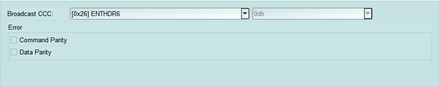
Broadcast CCC, ENTHDR6 allows the controller to simultaneously switch all I3C target devices on the bus into HDR-BT1 (High Data Rate – Burst Type 1) mode. The ENTHDR6 Broadcast CCC tells all targets that support HDR-BT1 to:- Exit Standard Data Rate (SDR) mode
- Enter HDR-BT1 signaling
- Use burst-type high-speed transfers optimized for single-cycle or low-latency operations
Only targets that support HDR-BT1 mode respond to ENTHDR6; devices that do not support this HDR mode safely ignore the command and remain in SDR mode.
-
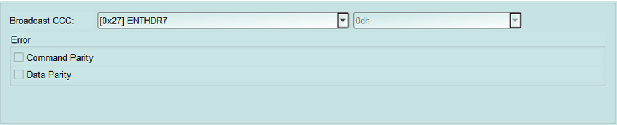
Broadcast CCC, ENTHDR7 allows the controller to simultaneously switch all I3C target devices on the bus into HDR-BT2 (High Data Rate – Burst Type 2) mode. The ENTHDR7 Broadcast CCC tells all targets that support HDR-BT2 to:- Exit Standard Data Rate (SDR) mode
- Enter HDR-BT2 signaling
- Use an alternative burst-type high-speed transfer mode, typically optimized for higher throughput or multi-cycle burst operations
Only targets that support HDR-BT2 mode respond to ENTHDR7; devices that do not support this HDR mode safely ignore the command and remain in SDR mode.
-
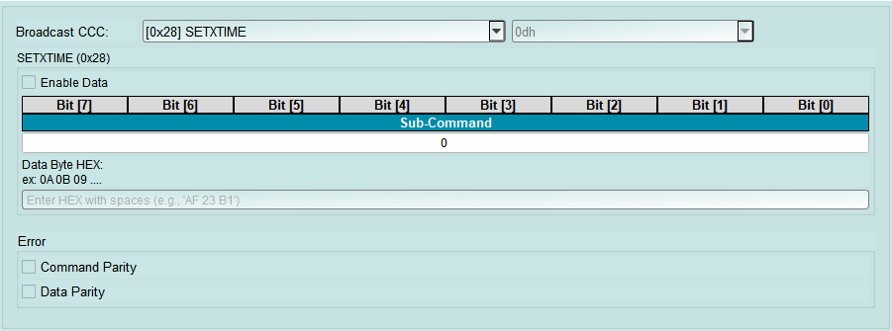
Broadcast CCC, SETXTIME allows the controller to simultaneously configure the timing parameters for extended data transfers on all I3C target devices on the bus. The SETXTIME Broadcast CCC tells all targets to:- Set the maximum duration or timeout for ongoing or upcoming transfers
- Adjust internal timers to ensure synchronized transfer completion
- Prepare for operations that may require longer or extended data phases
Only targets that support extended transfer timing respond to SETXTIME; devices that do not support this feature safely ignore the command.
-
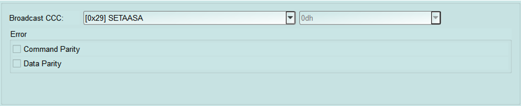
Broadcast CCC, SETAASA allows the controller to simultaneously configure all I3C target devices on the bus to use a specific Activity-Aware Slave Address (AASA). The SETAASA Broadcast CCC tells all targets to:- Enable Activity-Aware Slave Addressing, allowing devices to respond to a secondary address based on activity patterns
- Set the AASA value that targets will recognize for specific operations
- Support coordinated or selective communication in multi-target or power-optimized bus scenarios
Only targets that support AASA respond to SETAASA; devices that do not support this feature safely ignore the command.
-
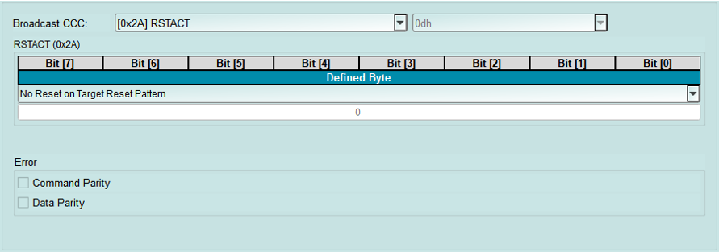
Broadcast CCC, RSTACK allows the controller to simultaneously reset the activity state of all I3C target devices on the bus. The RSTACK Broadcast CCC tells all targets to:- Clear their current activity state
- Reset any activity counters, timers, or internal flags used for Activity-Aware Slave Addressing (AASA) or other activity-based operations
- Return to a default idle or ready state for bus communication
Only targets that support activity state tracking respond to RSTACK; devices that do not support this feature safely ignore the command.
-
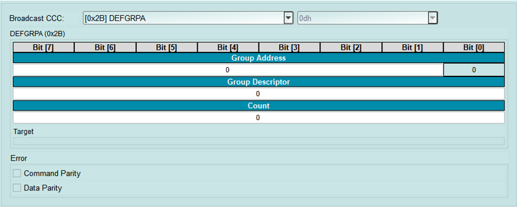
Broadcast CCC, DEFGRPA allows the controller to simultaneously define or assign a Group Address (GADDR) to all I3C target devices on the bus. The DEFGRPA Broadcast CCC tells all targets to:- Accept a specific Group Address for future group-directed commands
- Enable devices to respond collectively to broadcasts or group-targeted operations
- Support coordinated communication for power optimization, event notification, or synchronized data transfers
Only targets that support group addressing respond to DEFGRPA; devices that do not support this feature safely ignore the command.
-
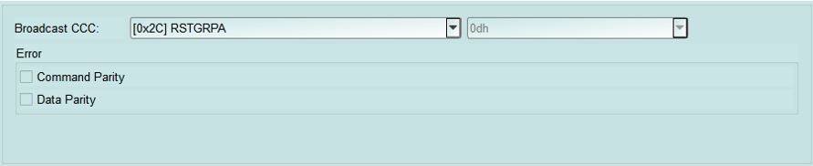
Broadcast CCC, RSTGRPA allows the controller to simultaneously reset the Group Address (GADDR) of all I3C target devices on the bus. The RSTGRPA Broadcast CCC tells all targets to:- Clear any previously assigned Group Address
- Remove the device from any group-targeted communications
- Return to a default state where they respond only to individual or broadcast commands
Only targets that support group addressing respond to RSTGRPA; devices that do not support this feature safely ignore the command.
-
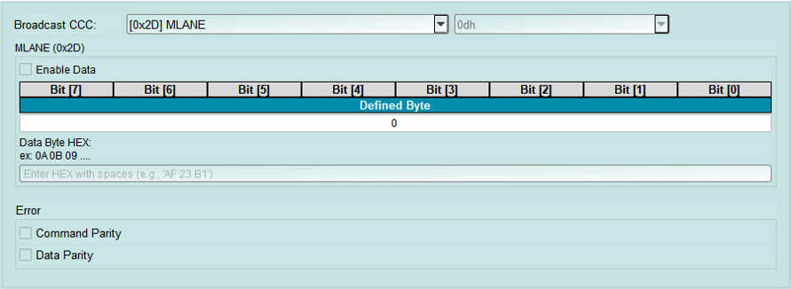
Broadcast CCC, MLANE allows the controller to simultaneously configure all I3C target devices on the bus for Multi-Lane operation. The MLANE Broadcast CCC tells all targets to:- Enable or configure multi-lane communication, allowing multiple physical lanes to be used for higher data throughput
- Coordinate lane mapping and synchronization across all capable devices
- Prepare devices for parallel high-speed data transfers using multiple I3C lanes
Only targets that support multi-lane operation respond to MLANE; devices that do not support this feature safely ignore the command.
-
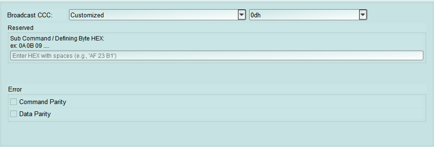
User can send out customized packet for specific purpose.
Direct CCC
-
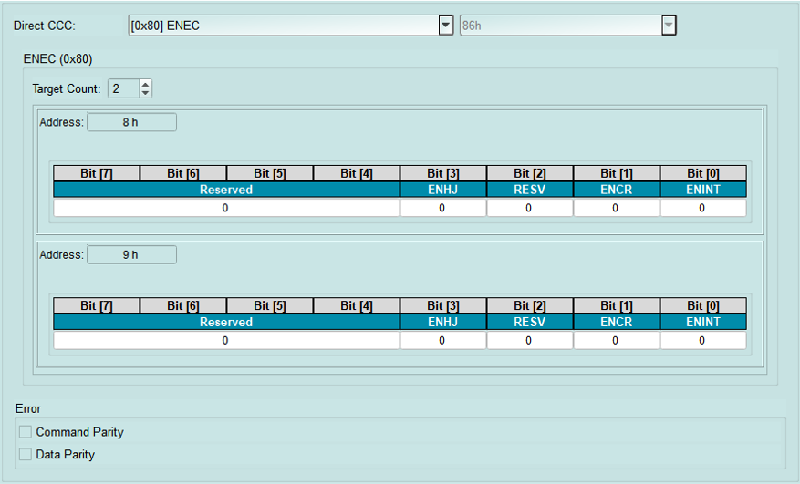
Direct CCC, ENEC allows the controller to enable specific event types for an individual I3C target device on the bus. The ENEC Direct CCC tells a particular target which events it is allowed to generate, such as:- In-Band Interrupts (IBI) – for asynchronous notifications to the controller
- Hot-Join – indicating that a new device has joined the bus
- Controller Role Request (CRR) – requesting a change in controller role
Without ENEC, the target cannot issue these events, even if it supports them.
-
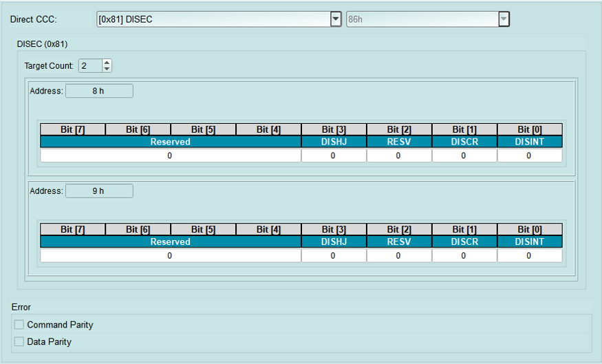
Direct CCC, DISEC allows the controller to disable specific event types for an individual I3C target device on the bus. The DISEC Direct CCC tells a particular target to stop generating certain events, such as:- In-Band Interrupts (IBI) – preventing the device from sending asynchronous notifications
- Hot-Join – ignoring indications when a new device joins
- Controller Role Request (CRR) – stopping requests to change the controller role
By using DISEC, the controller can selectively block events from a single device without affecting other devices on the bus.
-
Direct CCC - ENTAS0 Direct CCC, ENTAS0 instructs certain I3C target devices on the bus to enter Activity State 0, which is a defined low-activity / low-power state. The Direct ENTAS0 CCC tells certain targets to:
- Transition into Activity State 0
- Reduce internal activity and power consumption
- Maintain bus awareness so they can resume normal operation later
Activity State 0 is typically the lowest-power activity state defined for I3C targets.
-
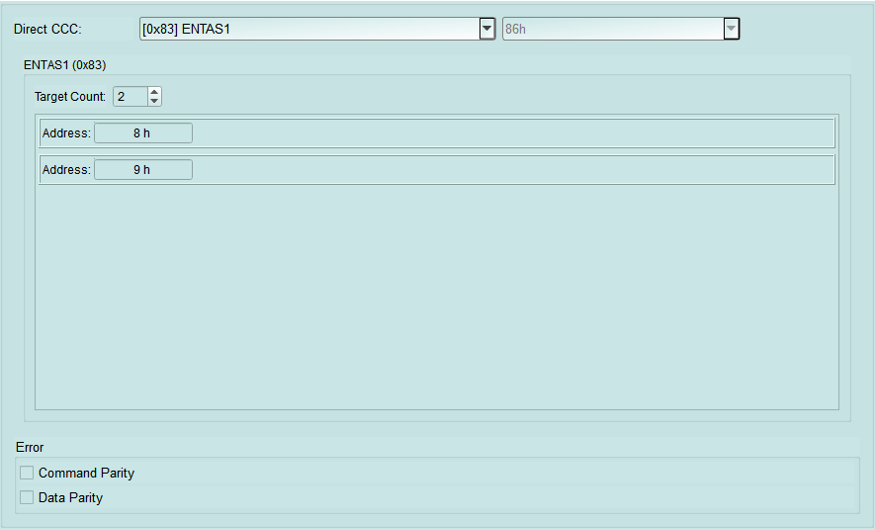
Direct CCC, ENTAS1 instructs certain I3C target devices on the bus to transition into Activity State 1, a moderate-activity / reduced-power operating state. The Direct ENTAS1 CCC tells certain targets to:- Enter Activity State 1
- Reduce power compared to full active mode
- Remain responsive to normal I3C bus operations
Activity State 1 balances power savings with bus availability.
-
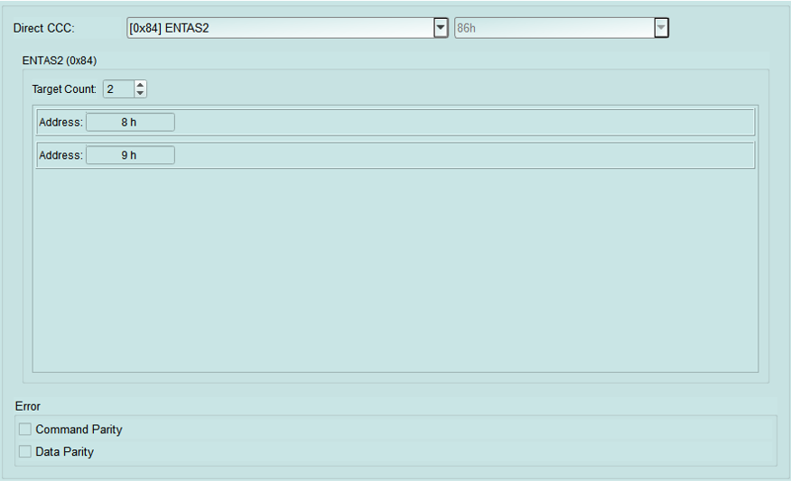
Direct CCC, ENTAS2 instructs certain I3C target devices on the bus to transition into Activity State 2, which is a high-activity / near-full-performance state. The Direct ENTAS2 CCC tells certain targets to:- Enter Activity State 2
- Operate with higher internal activity than state 1
- Be ready for high-throughput or low-latency communication
Activity State 2 is typically just below the fully unrestricted active state.
-
Direct CCC - ENTAS3 Direct CCC, ENTAS3 instructs certain I3C target devices on the bus to transition into Activity State 3, which represents the highest activity and performance state defined by the I3C specification. The Direct ENTAS3 CCC tells certain targets to:
- Enter Activity State 3
- Operate at full internal performance
- Be fully ready for maximum bus speed and lowest latency
Activity State 3 corresponds to unrestricted, fully active operation.
-
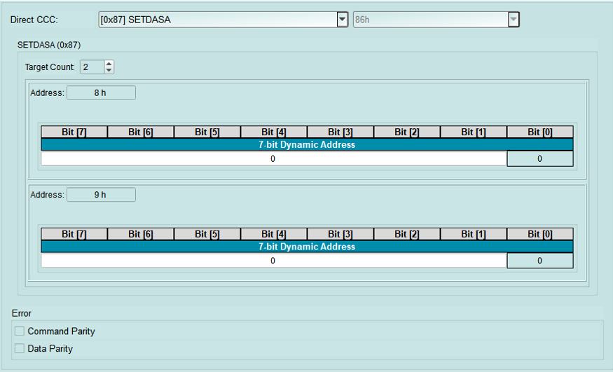
Direct CCC, SETDASA instructs a specific I3C target device on the bus, identified by its static I2C address, to adopt a new dynamic 7-bit address assigned by the controller. The Direct SETDASA CCC tells the target to:- Accept the new dynamic address provided by the controller
- Switch from using its static address to the assigned dynamic address for future communications
- Acknowledge the assignment so that normal I3C bus communication can proceed
This allows the controller to efficiently assign dynamic addresses to known devices without performing a full broadcast ENTDAA procedure.
-
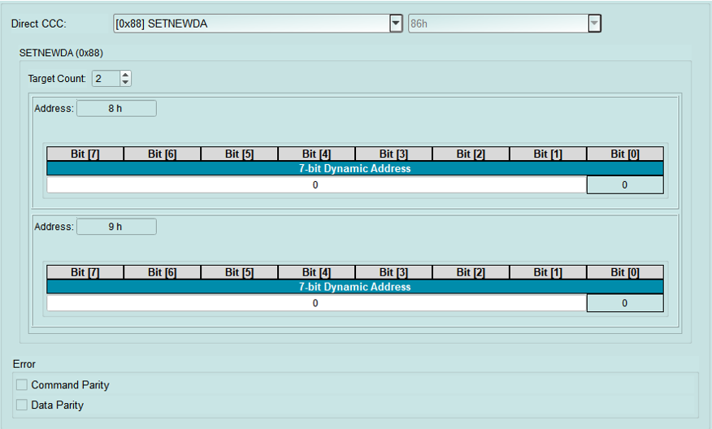
Direct CCC, SETNEWDA instructs a specific I3C target device, identified by its current dynamic address, to adopt a new dynamic 7-bit address assigned by the controller. The Direct SETNEWDA CCC tells the target to:- Change its current dynamic address to the new dynamic address provided by the controller
- Update its internal address mapping so future communications use the new dynamic address
- Acknowledge the address change so the controller knows the operation was successful
This command allows the controller to reassign dynamic addresses to devices already on the bus, for example, to resolve address conflicts or reorganize bus addressing without resetting devices.
-
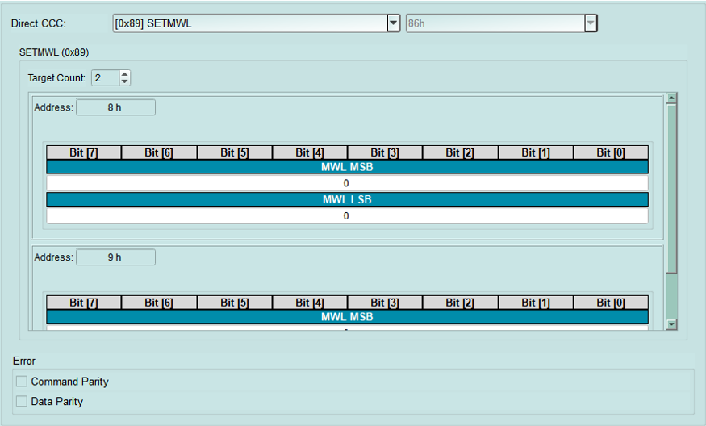
Direct CCC, SETMWL instructs a specific I3C target device on the bus to set its Maximum Write Length (MWL), which defines the largest number of data bytes the controller is allowed to write to that target in a single I3C write transaction. The Direct SETMWL CCC tells the target to:- Update its internal Maximum Write Length value to the value provided by the controller
- Limit future write transfers from the controller to this specified maximum length
- Enforce flow control by rejecting or managing writes that exceed the configured limit
This command allows the controller to optimize bus performance and ensure compatibility with targets that have internal buffering or processing constraints.
-
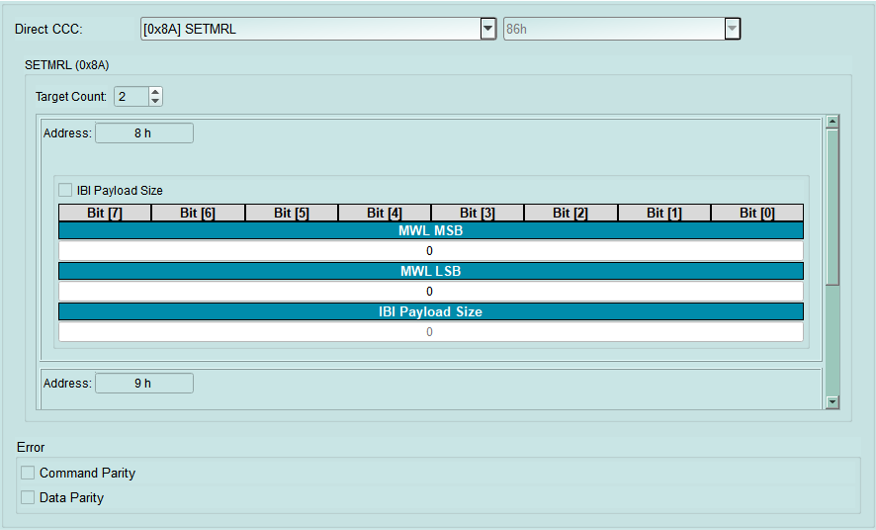
Direct CCC, SETMRL instructs a specific I3C target device on the bus to set its Maximum Read Length (MRL), which defines the largest number of data bytes the controller is allowed to read from that target in a single I3C read transaction. The Direct SETMRL CCC tells the target to:- Update its internal Maximum Read Length value to the value provided by the controller
- Limit future read transfers to the specified maximum length
- Ensure that read operations do not exceed the target’s internal buffering or data availability constraints
This command allows the controller to manage read transaction sizes, improving reliability and efficiency while preventing data overruns or incomplete transfers.
-
Direct CCC - GETMWL Direct CCC, GETMWL instructs a specific I3C target device on the bus to report its Maximum Write Length (MWL), which indicates the largest number of data bytes the controller is permitted to write to that target in a single I3C write transaction. The Direct GETMWL CCC tells the target to:
- Return its currently configured Maximum Write Length value to the controller
- Allow the controller to determine safe write transaction sizes
- Support optimal bus scheduling and flow control decisions
This command allows the controller to query a target’s write capacity, either before issuing write transfers or to confirm the value previously set using SETMWL.
-
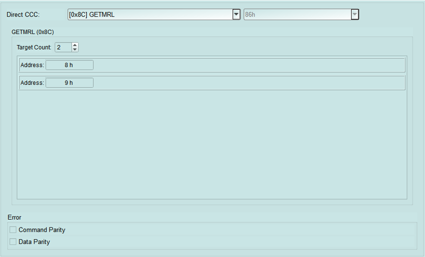
Direct CCC, GETMRL instructs a specific I3C target device on the bus to report its Maximum Read Length (MRL), which indicates the largest number of data bytes the controller is permitted to read from that target in a single I3C read transaction. The Direct GETMRL CCC tells the target to:- Return its currently configured Maximum Read Length value to the controller
- Allow the controller to determine safe and efficient read transaction sizes
- Support proper flow control and bus scheduling
This command allows the controller to query a target’s read capacity, either before performing read operations or to verify the value previously configured using SETMRL.
-
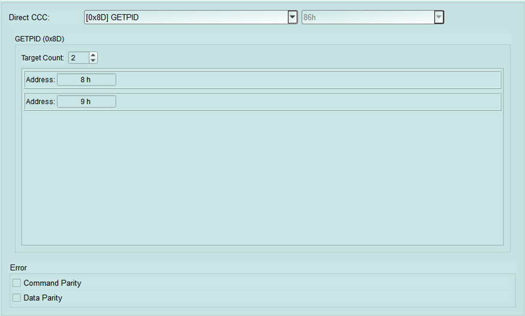
Direct CCC, GETPID instructs a specific I3C target device on the bus to report its Provisional ID (PID), which uniquely identifies the device according to the MIPI I3C specification. The Direct GETPID CCC tells the target to:- Return its 48-bit Provisional ID to the controller
- Allow the controller to identify the device vendor, part, and instance
- Support device discovery, enumeration, and validation
This command allows the controller to uniquely identify a target device without relying on static addresses, and is commonly used during device discovery or for verification after dynamic address assignment.
-
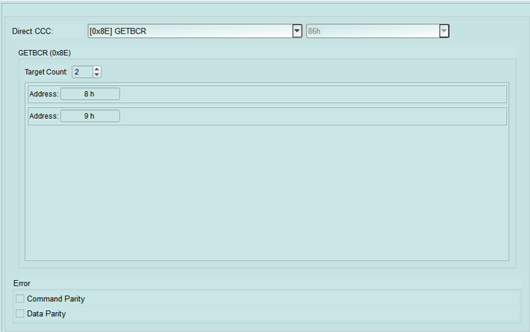
Direct CCC, GETBCR instructs a specific I³C target device on the bus to report its Bus Characteristics Register (BCR), which describes the target’s fundamental bus-related capabilities. The Direct GETBCR CCC tells the target to:- Return its Bus Characteristics Register value to the controller
- Indicate whether the device supports key I³C features such as I³C target mode, I2C legacy compatibility, and in-band interrupt capability
- Allow the controller to understand how the device behaves on the I³C bus
This command allows the controller to determine basic bus capabilities and protocol support of a target device, which is essential during device discovery and initialization.
-
Direct CCC - GETDCR Direct CCC, GETDCR instructs a specific I³C target device on the bus to report its Device Characteristics Register (DCR), which describes the device’s functional classification. The Direct GETDCR CCC tells the target to:
- Return its Device Characteristics Register value to the controller
- Indicate the general device type or functional category
- Allow the controller to identify the intended role of the device on the bus
This command allows the controller to understand what kind of device a target is, enabling appropriate driver selection and configuration during device discovery and initialization.
-
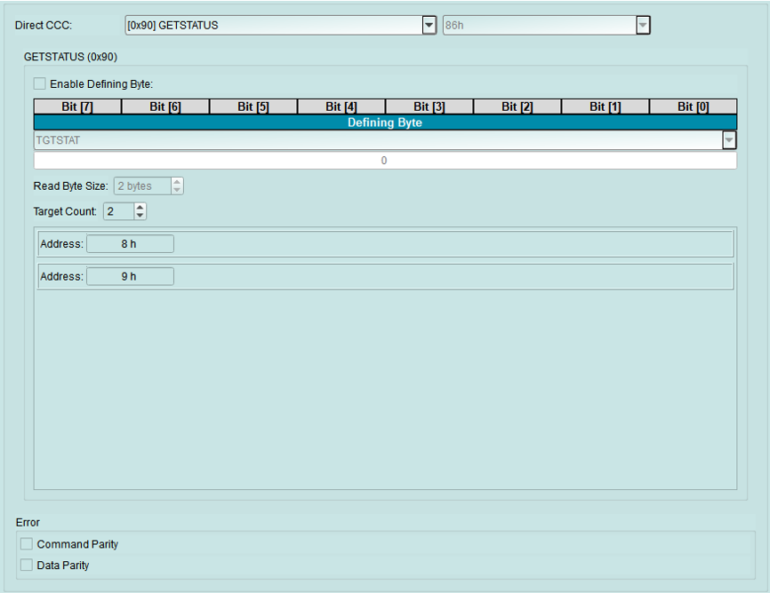
Direct CCC, GETSTATUS instructs a specific I³C target device on the bus to report its Status Register, which provides current operational and interrupt-related status information. The Direct GETSTATUS CCC tells the target to:- Return its current status information to the controller
- Indicate pending events such as interrupts or errors
- Allow the controller to determine the target’s operational state
This command allows the controller to query real-time device status, often as a follow-up to an In-Band Interrupt (IBI) or during diagnostic and monitoring operations.
-
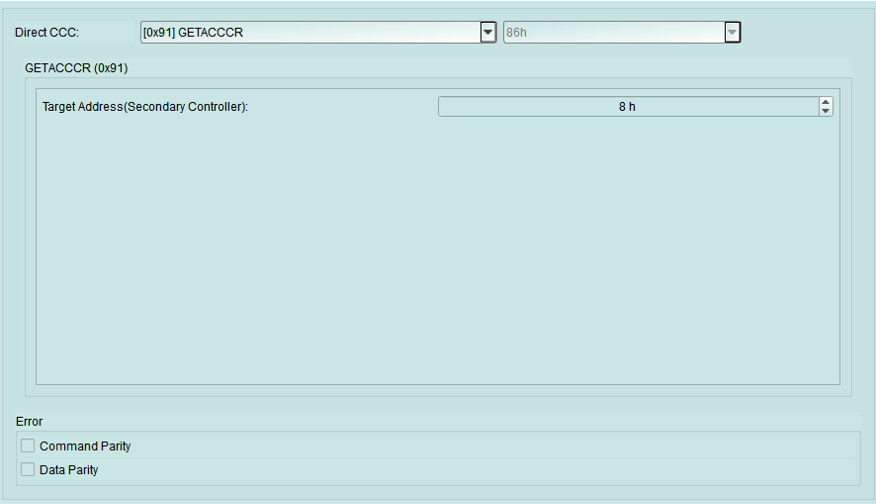
Direct CCC, GETACCCR instructs a specific I³C target device on the bus to report its Advanced Capabilities Control Register (ACCCR), which describes the target’s support for advanced I³C features and capabilities. The Direct GETACCCR CCC tells the target to:- Return its Advanced Capabilities Control Register value to the controller
- Indicate support for optional and advanced I³C features
- Allow the controller to determine how to enable or use advanced bus functionality with the target
This command allows the controller to discover advanced target capabilities beyond the basic bus and device characteristics, helping optimize performance and feature usage.
-
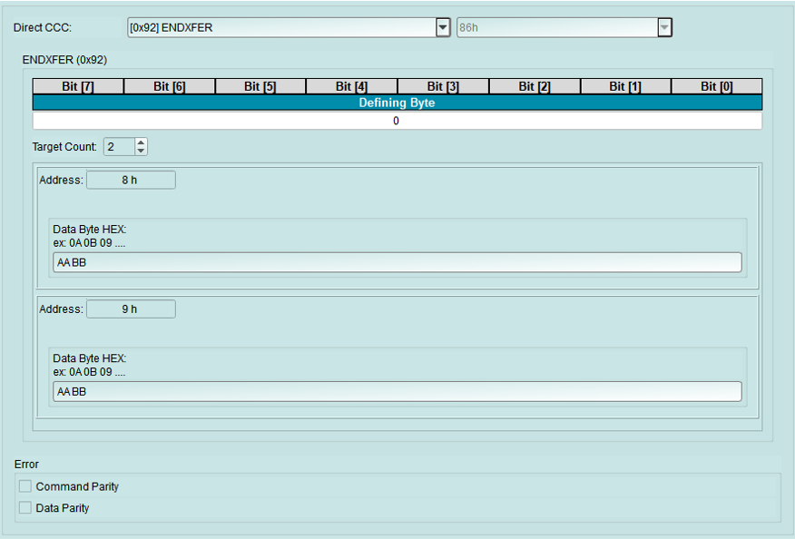
Direct CCC, ENDXFER instructs a specific I³C target device on the bus to terminate the current data transfer sequence and return to an idle or ready state. The Direct ENDXFER CCC tells the target to:- End the ongoing transfer or transaction sequence
- Clear any internal state related to the current transfer
- Prepare to accept new commands or transfers from the controller
This command allows the controller to cleanly abort or conclude a transfer, ensuring both the controller and target return to a known, synchronized state on the I³C bus.
-
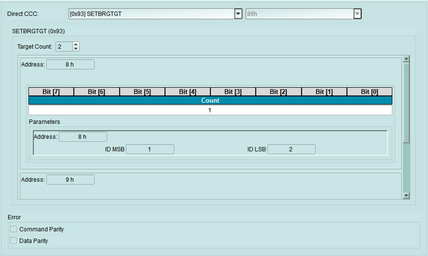
Direct CCC, SETBRGTGT instructs a specific I³C target device on the bus to configure its bus-related timing or behavior as a bridge target, which is relevant when the device participates in bridging or multi-segment bus topologies. The Direct SETBRGTGT CCC tells the target to:- Set or update its bridge target configuration parameters
- Adjust its behavior to properly forward or manage signals between bus segments
- Acknowledge the configuration so the controller knows the bridge target is ready
This command allows the controller to manage bus segmentation and bridge devices, enabling proper communication across complex I³C topologies while maintaining timing and protocol integrity.
-
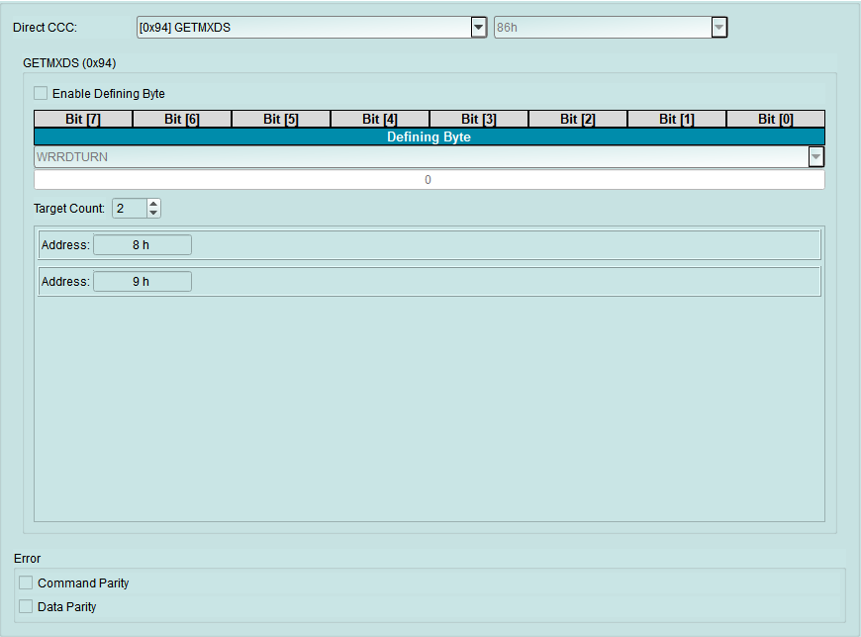
Direct CCC, GETMXDS instructs a specific I³C target device on the bus to report its Maximum Data Speed (MXDS), which indicates the highest data rate the device can reliably support on the I³C bus. The Direct GETMXDS CCC tells the target to:- Return its current Maximum Data Speed value to the controller
- Inform the controller of the fastest speed at which it can communicate
- Allow the controller to optimize bus timing and overall performance
This command allows the controller to query a target’s speed capability, ensuring that data transfers are conducted within the device’s supported limits and preventing communication errors due to excessive speed.
-
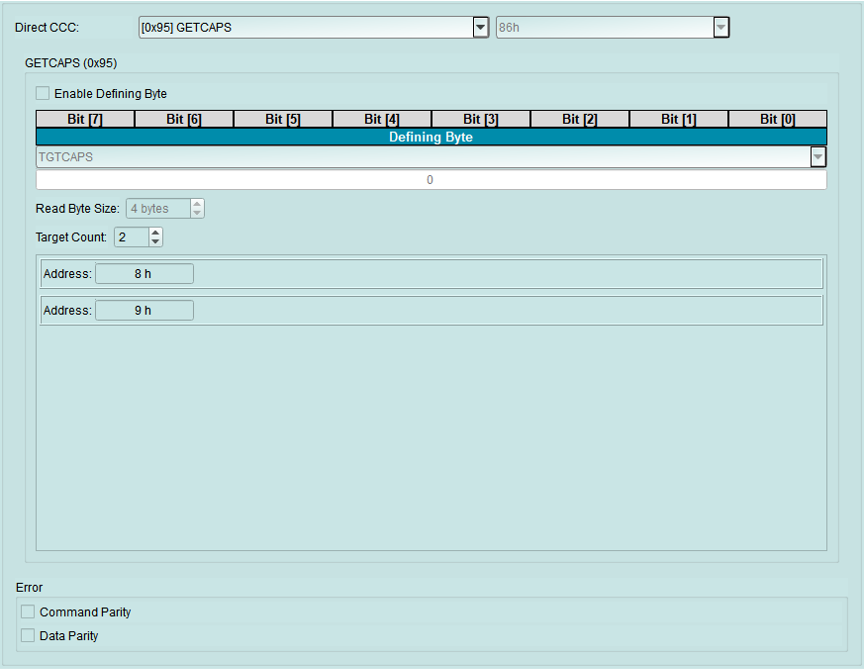
Direct CCC, GETCAPS instructs a specific I³C target device on the bus to report its capabilities, providing a summary of the device’s supported features and functional options. The Direct GETCAPS CCC tells the target to:- Return a value indicating which I³C features it supports
- Include information such as support for In-Band Interrupts (IBIs), HDR modes, multi-master capability, and other optional features
- Allow the controller to determine how best to communicate with and utilize the device
This command allows the controller to discover the functional capabilities of a target device, enabling proper configuration, optimized bus usage, and compatibility checks before performing advanced operations.
-
Direct CCC - SETROUTE Direct CCC, SETROUTE instructs a specific I³C target device on the bus to configure its routing path, which is particularly relevant in complex or multi-segment I³C topologies where certain devices act as bridges or routing points. The Direct SETROUTE CCC tells the target to:
- Set or update its internal routing configuration
- Determine which bus segment or downstream devices it should forward traffic to
- Acknowledge the new routing path so the controller knows the device is ready for communication
This command allows the controller to manage traffic paths and device connectivity, ensuring proper communication in multi-segment or bridged I³C networks.
-
Direct CCC - D2DXFER Direct CCC, D2DXFER instructs a specific I³C target device on the bus to perform a direct-to-direct data transfer between two devices on the bus, without requiring the controller to relay all the data. The Direct D2DXFER CCC tells the target to:
- Transfer a specified block of data directly from a source device to a destination device
- Use the target device as a facilitator for the transfer if needed
- Acknowledge completion of the transfer to the controller
This command allows the controller to offload data movement between devices, reducing bus traffic and improving overall efficiency for large data transfers.
-
Direct CCC - SETXTIME Direct CCC, SETXTIME instructs a specific I³C target device on the bus to set a transfer timeout value, defining the maximum allowed duration for certain data transfer operations. The Direct SETXTIME CCC tells the target to:
- Configure its internal transfer timeout according to the value provided by the controller
- Limit how long a read or write transaction can remain active before the target considers it failed
- Acknowledge the new timeout setting so future transfers comply with the configured limit
This command allows the controller to enforce reliable and predictable timing on the I³C bus, helping prevent stalled transfers or bus lockup due to slow or unresponsive devices.
-
Direct CCC - GETXTIME Direct CCC, GETXTIME instructs a specific I³C target device on the bus to report its current transfer timeout value, which defines the maximum allowed duration for certain data transfer operations. The Direct GETXTIME CCC tells the target to:
- Return its currently configured transfer timeout value to the controller
- Allow the controller to determine how long the target will wait during a read or write transaction before timing out
- Support bus scheduling and error management by providing accurate timing information
This command allows the controller to query a target’s transfer timing constraints, helping ensure that data transfers are performed reliably and within the expected time limits.
-
Direct CCC - RSTACT Direct CCC, RSTACT instructs a specific I³C target device on the bus to reset its Activity State to the default or inactive state as defined by the I³C specification. The Direct RSTACT CCC tells the target to:
- Transition from its current activity state to the default or idle state
- Clear any temporary operational conditions related to activity state (e.g., performance level, internal counters)
- Acknowledge the reset so the controller knows the device is back in a known state
This command allows the controller to reinitialize or normalize a device’s activity state, which is useful for power management, performance tuning, or recovering devices that are in a higher activity state than required.
-
Direct CCC - SETGRPA Direct CCC, SETGRPA instructs a specific I³C target device on the bus to assign it to a particular group address (Group Address A), enabling group communication and selective broadcast operations. The Direct SETGRPA CCC tells the target to:
- Store the specified group address in its internal configuration
- Respond to future group-targeted broadcast commands sent to that group address
- Acknowledge the assignment so the controller knows the device is successfully grouped
This command allows the controller to organize devices into functional or logical groups, enabling efficient broadcast communication without addressing each device individually.
-
Direct CCC - RSTGRPA Direct CCC, RSTGRPA instructs a specific I³C target device on the bus to clear or reset its assigned Group Address A (GRPA), removing it from the group. The Direct RSTGRPA CCC tells the target to:
- Delete or invalidate its stored Group Address A
- Stop responding to broadcast commands sent to that group address
- Acknowledge the reset so the controller knows the device is no longer part of the group
This command allows the controller to dynamically manage group memberships, ensuring that devices only respond to group-targeted operations when appropriate.
-
Direct CCC - MLANE Direct CCC, MLANE instructs a specific I³C target device on the bus to configure or report its Multi-Lane operation settings, which are used in systems that support multiple physical lanes for parallel data transfer. The Direct MLANE CCC tells the target to:
- Enable or configure multi-lane operation parameters (such as lane assignment or activation)
- Adjust internal settings to participate correctly in multi-lane transfers
- Acknowledge the configuration so the controller knows the target is ready for multi-lane communication
This command allows the controller to optimize data throughput by coordinating devices that support multiple parallel lanes, enabling higher-speed communication or load balancing across lanes.
-
Direct CCC - Customized User can send out customized packet for specific purpose.
-
User can send out legacy I2C packet, for specific purpose.
Packet Constructor
-
Private RW
-
Private Read
-
Private Read with SubAddr
-
Private Write
-
Private Write with SubAddr
Please refer to Private RW for more detail description.
-
-
Broadcast CCC
-
Broadcast CCC - ENEC Please refer to ENEC for more detail description.
-
Broadcast CCC - DISEC Please refer to DISEC for more detail description.
-
Broadcast CCC - ENTAS0 Please refer to ENTAS0 for more detail description.
-
Broadcast CCC - ENTAS1 Please refer to ENTAS1 for more detail description.
-
Broadcast CCC - ENTAS2 Please refer to ENTAS2 for more detail description.
-
Broadcast CCC - ENTAS3 Please refer to ENTAS3 for more detail description.
-
Broadcast CCC - RSTDAA Please refer to RSTDAA for more detail description.
-
Broadcast CCC - ENTDAA Please refer to ENTDAA for more detail description.
-
Broadcast CCC - DEFTGTS Please refer to DEFTGTS for more detail description.
-
Broadcast CCC - SETMWL Please refer to SETMWL for more detail description.
-
Broadcast CCC - SETMRL Please refer to SETMRL for more detail description.
-
Broadcast CCC - ENTTM Please refer to ENTTM for more detail description.
-
Broadcast CCC - SETBUSCON Please refer to SETBUSCON for more detail description.
-
Broadcast CCC - ENDXFER Please refer to ENDXFER for more detail description.
-
Broadcast CCC - ENTHDR0
- Please refer to ENTHDR0 for more detail description.
-
Broadcast CCC - ENTHDR1
- Please refer to ENTHDR1 for more detail description.
-
Broadcast CCC - ENTHDR2
- Please refer to ENTHDR2 for more detail description.
-
Broadcast CCC - ENTHDR3
- Please refer to ENTHDR3 for more detail description.
-
Broadcast CCC - ENTHDR4 Please refer to ENTHDR4 for more detail description.
-
Broadcast CCC - ENTHDR5 Please refer to ENTHDR5 for more detail description.
-
Broadcast CCC - ENTHDR6 Please refer to ENTHDR6 for more detail description.
-
Broadcast CCC - ENTHDR7 Please refer to ENTHDR7 for more detail description.
-
Broadcast CCC - SETXTIME Please refer to SETXTIME for more detail description.
-
Broadcast CCC - SETAASA Please refer to SETAASA for more detail description.
-
Broadcast CCC - RSTACT Please refer to RSTACT for more detail description.
-
Broadcast CCC - DEFGRPA Please refer to DEFGRPA for more detail description.
-
Broadcast CCC - RSTGRPA Please refer to RSTGRPA for more detail description.
-
Broadcast CCC - MLANE Please refer to MLANE for more detail description.
-
Broadcast CCC - Customized Please refer to Customized for more detail description.
-
-
Image for Direct CCC
Most of the Direct CCC can add Repeat Starts when multiple target address needed.
-
Direct CCC - ENEC Please refer to ENEC for more detail description.
-
Direct CCC - DISEC Please refer to DISEC for more detail description.
-
Direct CCC - ENTAS0 Please refer to ENTAS0 for more detail description.
-
Direct CCC - ENTAS1 Please refer to ENTAS1 for more detail description.
-
Direct CCC - ENTAS2 Please refer to ENTAS2 for more detail description.
-
Direct CCC - ENTAS3 Please refer to ENTAS3 for more detail description.
-
Direct CCC - SETDASA Please refer to SETDASA for more detail description.
-
Direct CCC - SETNEWDA Please refer to SETNEWDA for more detail description.
-
Direct CCC - SETMWL Please refer to SETMWL for more detail description.
-
Direct CCC - SETMRL Please refer to SETMRL for more detail description.
-
Direct CCC - GETMWL Please refer to GETMWL for more detail description.
-
Direct CCC - GETMRL Please refer to GETMRL for more detail description.
-
Direct CCC - GETPID Please refer to GETPID for more detail description.
-
Direct CCC - GETBCR Please refer to GETBCR for more detail description.
-
Direct CCC - GETDCR Please refer to GETDCR for more detail description.
-
Direct CCC - GETSTATUS Please refer to GETSTATUS for more detail description.
-
Direct CCC - GETACCCR Please refer to GETACCCR for more detail description.
-
Direct CCC - ENDXFER Please refer to ENDXFER for more detail description.
-
Direct CCC - SETBRGTGT Please refer to SETBRGTGT for more detail description.
-
Direct CCC - GETMXDS Please refer to GETMXDS for more detail description.
-
Direct CCC - GETCAPS Please refer to GETCAPS for more detail description.
-
Direct CCC - SETROUTE Please refer to SETROUTE for more detail description.
-
Direct CCC - D2DXFER Please refer to D2DXFER for more detail description.
-
Direct CCC - SETXTIME Please refer to SETXTIME for more detail description.
-
Direct CCC - GETXTIME Please refer to GETXTIME for more detail description.
-
Direct CCC - RSTACT Please refer to RSTACT for more detail description.
-
Direct CCC - SETGRPA Please refer to SETGRPA for more detail description.
-
Direct CCC - RSTGRPA Please refer to RSTGRPA for more detail description.
-
Direct CCC - MLANE Please refer to MLANE for more detail description.
-
Direct CCC - Customized
Please refer to Customized for more detail description.
-
-
Legacy I2C RW
-
Legacy I2C Read Please refer to Legacy I2C Read for more detail description.
-
Legacy I2C Read with SubAddr Please refer to Legacy I2C Read with SubAddr for more detail description.
-
Legacy I2C Write Please refer to Legacy I2C Write for more detail description.
-
Legacy I2C Write with SubAddr Please refer to Legacy I2C Write with SubAddr for more detail description.
-